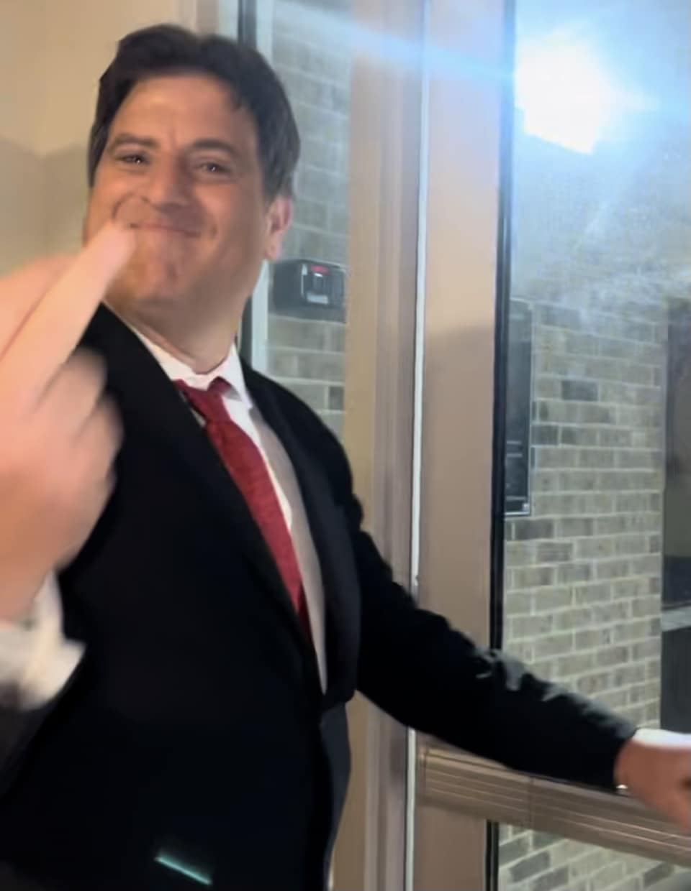

BLUE DREAM
VOTE GILLUM
My name is Keith Ellis Gillum and I’m running for State Rep because it’s time for a Florida economy that works for everyone.
I was told it would take an act of God for me to win my district. I’ll take those odds any day. I consider myself a "Candy Crat", a term I coined one night after re-watching the movie Uncle Buck (1989).
John Candy plays a happy go-lucky, good-hearted Democrat who drives a run-down car and likes to bet the ponies. Me and him aren’t dissimilar, except in the waistline of course.
My opponent Joel Rudman is a thin-skinned politican in bed with the corporations. He has generated zero dollars for Santa Rosa County and almost every bill he has brought to the table has been dead on arrival.

Look at this guy... He only cares about himself...
It's time for a change.
KEITH ON THE ISSUES
Working people (construction worker/hard hat symbol) – I will fight for affordable healthcare and housing & to lower insurance premiums.
YES on amendment 3(pot leaf/medical symbol): Now is the time to legalize marijuana for adults. Taxation of it will be a boon for Floridians across the board.
Clean Water: I will fight to keep our waters clean and free of corporate greed pollution which is deleterious to our health and kills our state animals such as the manatee.
The skies ahead appear ominous. It will take integrity and creativity to ride out the storm.
I’m a straight shooter. I have no famous friends or relatives or financial backers of any kind. I’m in urgent need of your support. Any amount you can contribute is wind in the sails. Act now. Chip in. Help me win in November.
DONATE